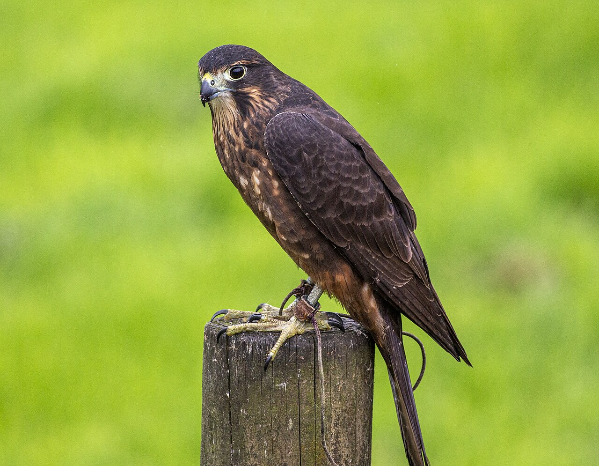

Resources → Housing
How to Build a Falconry Mews: Step-by-Step Construction Guide
A mews is the falconer's raptor housing facility. It must meet federal and state minimum standards, pass inspection by your wildlife agency, and keep your bird safe from weather, predators, and stress. This guide covers planning, materials, construction, and the inspection process.
Federal & State Requirements
The USFWS establishes minimum standards for raptor housing under 50 CFR 21.29. Your state wildlife agency may add requirements. Check with your state before building. Federal minimums include:
- Size — At least 64 sq ft of floor space (8' x 8') for a large hawk. Smaller species may require less, but bigger is always better.
- Height — Tall enough for the bird to perch without tail feathers touching the floor or walls. Minimum 6 feet for buteos.
- Ventilation — Adequate airflow without direct drafts on the perch. At least one screened ventilation opening.
- Predator-proof — Must prevent entry by raccoons, cats, dogs, owls, and other predators. This means hardware cloth (not chicken wire), secure latches, and solid floor or buried wire apron.
- Protection from elements — Roof must shed rain/snow. At least one wall solid to block prevailing wind.
- Perch — Appropriate perch for the species. Bow perch for buteos, block for falcons.
- Water — Access to a bath pan (shallow water container) at all times.
Planning Your Mews
Location
- Place the mews where you can see it from your house for security monitoring.
- Orient the main window or opening away from prevailing winds (usually face south or east in northern states).
- Ensure good drainage — never build in a low spot that pools water.
- Keep away from loud, consistent noise sources (air conditioners, busy roads).
- Check local zoning and HOA rules. Some jurisdictions classify mews as an accessory structure requiring a permit.
Design Choices
- Shed style — Single-slope roof, simplest to build. Most common for first mews.
- Gable style — Traditional peaked roof. Better ventilation at the ridge. More complex to build.
- Converted structure — A garden shed, dog kennel, or small outbuilding modified to meet mews standards. Often the most economical option ($200–$500 for modifications).
Materials List
| Item | Quantity (8x8 mews) | Est. Cost |
|---|---|---|
| Pressure-treated 2x4 lumber (framing) | 20–25 boards | $100–$150 |
| Plywood sheathing (1/2") | 8–10 sheets | $200–$300 |
| Hardware cloth (1/2" galvanized) | 50 sq ft | $60–$100 |
| Roofing material (shingles or metal) | 64+ sq ft | $80–$200 |
| Door hinges & latch (predator-proof) | 1 set | $25–$50 |
| AstroTurf or outdoor carpet (perch shelf) | 4–8 sq ft | $15–$30 |
| Screws, nails, fasteners | Assorted | $30–$50 |
| Paint or exterior stain | 1–2 gallons | $30–$60 |
| Bath pan (shallow rubber tub) | 1 | $10–$20 |
| Perch (bow or block) | 1 | $40–$100 |
Total estimated cost: $600–$1,100 for a new build. $200–$500 for a shed conversion.
Construction Steps
- Foundation — Pour a concrete pad, use concrete blocks, or build a pressure-treated wood floor elevated on blocks. The floor must prevent predators from digging in. A wire apron buried 12 inches around the perimeter adds security.
- Framing — Frame walls using 2x4s on 16" centers. A shed-style mews has the front wall taller (7–8') and the back wall shorter (6–7') for roof slope.
- Sheathing — Cover walls with plywood. Leave openings for the door, window/ventilation panel, and any screened openings.
- Ventilation openings — Cut ventilation openings high on walls (above perch height). Cover with hardware cloth, not chicken wire. Raccoons can reach through chicken wire. Provide adjustable baffles or shutters for winter.
- Window/light panel — Install at least one window or screened panel for natural light. Birds need a day/night cycle. Use hardware cloth behind any opening. Some falconers use vertical slat windows (1" wide slats spaced 1" apart) that admit light and air while preventing the bird from flying into glass.
- Door — Build a solid door that opens inward (so the bird cannot push it open). Install a spring-loaded latch or padlock. Many falconers add a double-entry vestibule (small airlock) to prevent escape during entry.
- Roof — Install roofing to shed water away from the door. Metal roofing is durable and fast to install. Overhang at least 6 inches on all sides.
- Interior — Mount the perch at appropriate height (waist to shoulder height). Line the perch shelf area with AstroTurf for padding. Install a bath pan holder or place the pan on the floor. Keep the interior simple — no clutter for the bird to injure itself on.
- Predator-proofing — Secure all seams with hardware cloth. Check for gaps larger than 1 inch. Install predator guards on any exposed wire. Test all latches — raccoons are surprisingly dexterous.
- Exterior — Paint or stain the exterior for weather protection. Ensure drainage slopes away from the structure.
Weathering Yard
A weathering yard is an outdoor enclosure where the bird can sun and bathe safely while tethered. It is not required by federal rules but is considered standard practice.
- Minimum 6' x 6' enclosed area with a perch
- Covered on top with netting or hardware cloth to prevent escape and aerial predator access
- Partially shaded — the bird must be able to move into shade
- Gravel or grass floor with good drainage
- Bath pan accessible
- Never leave a tethered bird unattended in a weathering yard where ground predators can reach it
Inspection Checklist
Before trapping your first bird, your state wildlife officer will inspect your mews. Here is what they check:
- Meets minimum size requirements for the species you plan to keep
- Adequate ventilation without direct drafts
- Predator-proof construction (hardware cloth, secure latches, no gaps)
- Appropriate perch for the species
- Protection from rain, snow, wind, and extreme temperatures
- Fresh water access (bath pan)
- Clean, dry interior
- Door latches functional and secure
- No hazards (exposed nails, sharp edges, loose wire)
Schedule your inspection well before trapping season. Inspectors are often busy in early fall. Build and inspect in summer so you are ready to trap when the season opens.
Recommended Materials
Galvanized welded wire mesh. 1/2-inch openings prevent raccoon and predator intrusion. Essential for all mews windows and vents.
Spring-loaded gate latch resistant to raccoon manipulation. Padlock-compatible for added security.
Cut-to-fit artificial turf for perch surfaces and shelf areas. Cushions feet and prevents bumblefoot.
Shallow rubber feed pan perfect for raptor bathing. Heavy enough to stay put, easy to clean and refill.
Browse Mews Builders & Supplies
Find mews materials, kits, and custom builders in our directory.
Browse Mews Listings